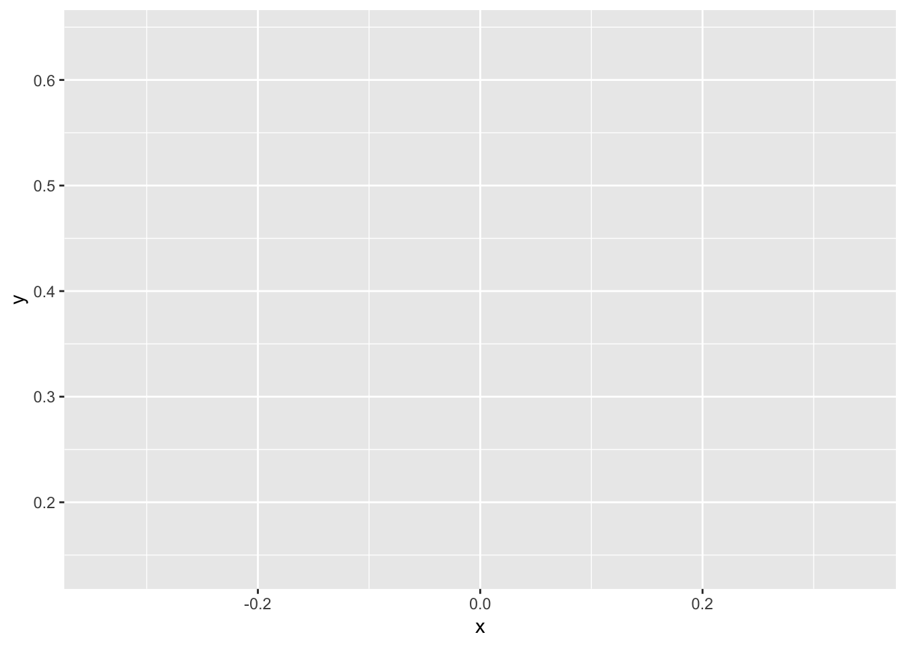

This is an R Markdown Notebook. When you execute code within the notebook, the results appear beneath the code. The purpose of this notebook is to enable you to play around with basic functionalities of R.
The website you see now is a rendered HTML file. to play with the .Rmd file, go to the original repository and download the .Rmd file and run the codes in RStudio.
first_variable = 'This is my first R variable.'
print(first_variable)## [1] "This is my first R variable."R is a powerful analytical language that is very simple to use. Although it isn’t without its quirks so we are going to look at its data types and simple functionalities first.
There are various types in R such as character, numeric (float), integer etc. These basic types can be stored in vectors and matrices as long as the entire vector or matrix consists of the same data type. To store data of different types without losing their type properties, you can use data frames and lists. Let’s create example variables to demonstrate.
# An integer. Also you can use comments with #
lecture_code = 783
# A character variable
lecture_name = 'Social Media Analytics'
# A float
random_float = 1.2
# An integer vector
dept_lecture_code = c(901, 783)
# A character vector
dept_lecture_name = c("Information Systems", "Social Media Analytics")
# A data frame
codes_names_df = data.frame(dept_lecture_code, dept_lecture_name)
# A list
codes_names_list = list(dept_lecture_code, dept_lecture_name)
# A vector that combines integer and character
abomination = c(dept_lecture_code, dept_lecture_name) # This casts integers to characterAs you can see c function stands for ‘combine’. It can combine explicit values or different vectors together to form a new vector.
Data frame and list structures of R allow you to utilize different functionalities of data types. They retain the functionality of each data type and allow R’s and R packages’ functions to adjust their behavior accordingly for each data type. Let’s use the summary function to demonstrate this. In order to do that, I will load an existing dataset in R samples.
# Iris is an existing dataset in R. You can load it directly
data(iris)
str(iris)## 'data.frame': 150 obs. of 5 variables:
## $ Sepal.Length: num 5.1 4.9 4.7 4.6 5 5.4 4.6 5 4.4 4.9 ...
## $ Sepal.Width : num 3.5 3 3.2 3.1 3.6 3.9 3.4 3.4 2.9 3.1 ...
## $ Petal.Length: num 1.4 1.4 1.3 1.5 1.4 1.7 1.4 1.5 1.4 1.5 ...
## $ Petal.Width : num 0.2 0.2 0.2 0.2 0.2 0.4 0.3 0.2 0.2 0.1 ...
## $ Species : Factor w/ 3 levels "setosa","versicolor",..: 1 1 1 1 1 1 1 1 1 1 ...data function loads the data from R for already existing datasets. We will later see how to load data from different data sources. str function outputs the names, types and first few entries of a data frame. This allows you to take a quick look at the data. As you can see, ‘Species’ variable in the data frame is a new data type called “Factor”. This is essentially a character variable with known amount of different values. This allows R to run count-type statistics on it. Most character variables are represented as factors by default when loading into data frames unless explicitly specified. We will talk more about factors later.
summary(iris)## Sepal.Length Sepal.Width Petal.Length Petal.Width
## Min. :4.300 Min. :2.000 Min. :1.000 Min. :0.100
## 1st Qu.:5.100 1st Qu.:2.800 1st Qu.:1.600 1st Qu.:0.300
## Median :5.800 Median :3.000 Median :4.350 Median :1.300
## Mean :5.843 Mean :3.057 Mean :3.758 Mean :1.199
## 3rd Qu.:6.400 3rd Qu.:3.300 3rd Qu.:5.100 3rd Qu.:1.800
## Max. :7.900 Max. :4.400 Max. :6.900 Max. :2.500
## Species
## setosa :50
## versicolor:50
## virginica :50
##
##
## Summary function outputs basic statistics regarding the data frame. For numeric variables, these statistics describe the five-point statistics. For factor variables, this is of count-type. If we represented our character variable as character type instead of factor, that would be impossible.
iris$Species = as.character(iris$Species)
summary(iris)## Sepal.Length Sepal.Width Petal.Length Petal.Width
## Min. :4.300 Min. :2.000 Min. :1.000 Min. :0.100
## 1st Qu.:5.100 1st Qu.:2.800 1st Qu.:1.600 1st Qu.:0.300
## Median :5.800 Median :3.000 Median :4.350 Median :1.300
## Mean :5.843 Mean :3.057 Mean :3.758 Mean :1.199
## 3rd Qu.:6.400 3rd Qu.:3.300 3rd Qu.:5.100 3rd Qu.:1.800
## Max. :7.900 Max. :4.400 Max. :6.900 Max. :2.500
## Species
## Length:150
## Class :character
## Mode :character
##
##
## I did two things in the previous chunk. First, I accessed the Species variable, and casted it into type character. Then, I took the summary of the data frame once more. $ operator is the simplest way to index a variable in R. However it’s not fool-proof. The recommended way to index a variable is as follows, with double brackets and quote-marked-variable-names:
data(iris) # Reload original iris data
iris[["Species"]] = as.character(iris[["Species"]])
summary(iris)## Sepal.Length Sepal.Width Petal.Length Petal.Width
## Min. :4.300 Min. :2.000 Min. :1.000 Min. :0.100
## 1st Qu.:5.100 1st Qu.:2.800 1st Qu.:1.600 1st Qu.:0.300
## Median :5.800 Median :3.000 Median :4.350 Median :1.300
## Mean :5.843 Mean :3.057 Mean :3.758 Mean :1.199
## 3rd Qu.:6.400 3rd Qu.:3.300 3rd Qu.:5.100 3rd Qu.:1.800
## Max. :7.900 Max. :4.400 Max. :6.900 Max. :2.500
## Species
## Length:150
## Class :character
## Mode :character
##
##
## You can perform mathematical computations on numeric variables and create new ones using the same syntax.
iris[["New_Numeric_Var_1"]] = iris[["Sepal.Length"]] + iris[["Sepal.Width"]]
iris$New_Numeric_Var_2 = iris$Sepal.Length/(iris$Sepal.Width+0.00001)In the first line, I indexed the variables using the prefered method and made a new variable. In the second line, I used the simple method and made a new variable. I also added a scalar to all values in Sepal.Width variable. R is a very flexible language. You can do most computations without explicitly casting the data into the same dimension, however this may cause issues. I won’t demonstrate this for now, but make sure to regularly check your data for any inconsistencies that this flexibility might cause.
For futura tasks, you will need to install different packages. To perform this installation, either select “Install Packages” from “Tools” menu in RStudio, or use the install.packages command in console. Let’s install stringr package that you will be using in the class using this command.
# install.packages("stringr")
# I have this package already installed so I'm skipping this. You should run this command.R also has control structures that any programming language has so let’s try to install this package with an ‘if’ structure.
if(!"stringr"%in%installed.packages()){
install.packages("stringr")
}What this chunk does is, checks whether stringr is installed and installs it if it’s not installed. installed.packages() command lists all the installed packages in your default libraries. %in% expression checks whether the left hand side is in the right hand side and ‘!’ notation is negation in R. As before, ‘install.packages’ command installs the package. There are for loops, while loops, try-catch structures etc. in R. We can talk about these when the need arises. If you want to see more examples on control structures, go to one of the several tutorials available online.
One of the most powerful aspects of R is the data visualization libraries developed in it. The most widely used visualization package is ggplot2 which stands for “Grammar of Graphics Plot 2”. There are an abundance of plotting functions available in this library. Let’s install ggplot2 and load it then let’s plot something interesting.
# install.packages("ggplot2")
# install.packages("emojifont")
# install.packages("plotly")
library(emojifont) # Load emojis because why not.
library(ggplot2) # Load ggplot2. You can't use functions in libraries without loading them.
library(plotly) # This library makes the plots interactive. So much cooler this way.So I’m going to plot two different graphics. First one is a serious professional one that actually has meaning, the other one will be a heart made of panda faces because why not?
# Serious plot
data("diamonds") # Load diamonds data from ggplot2 package
# summary(diamonds)
p = ggplot(data = diamonds, aes(x = color, fill = color)) + geom_bar()
ggplotly(p)So that’s a (sort-of) interactive bar-plot that shows us the number of colors in the diamonds dataset. You can make it even more interactive by using plotly library directly. Exploring R’s visualization libraries will take too much time now, so I’m moving on but you are encouraged to study them yourselves as visualization is one of the most important parts of analytics. Now pandas.
t= seq(-1, 1, length=50)
x=cos(t)*sin(t)*log(abs(t))
y=sqrt(abs(t))*cos(t)
ggplot() + geom_emoji("panda_face", x=x, y=y, size=8)
# The plot is inspired from a fellow R-Lady whose new blog can be found at
# https://antuki.github.io/en/The thing about R is, it’s a very powerful tool to perform analytics. It handles most types of data very well, the development community is very active and it’s actually really fun. It has certain downsides such as being difficult to use in performance-demanding applications but for social media analytics, it’s perfect.
I believe this is enough to get you started on your own. You will make mistakes, run into frustrating problems, encounter cryptic error messages but all of these can usually be solved via Googling or simply asking me (ask Google first though).